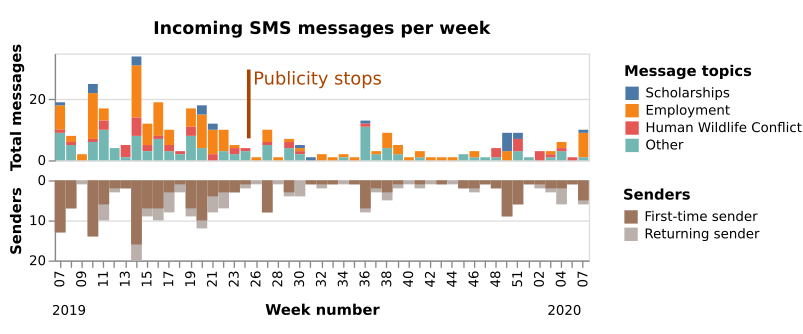
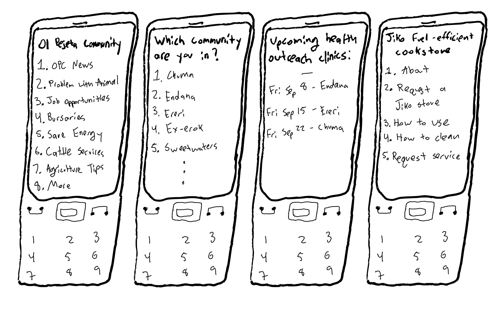
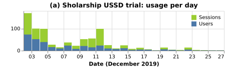
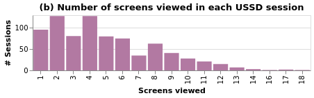
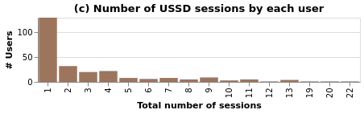

Mobile Phones and
Conservancy Communities

Communication

- 35,000 people within 5km
- Travel is difficult
- Communication is hard
Can basic phone services...
- ...improve service delivery?
- ...build relationships?
- Feedback
- Credible information
- Improving reach
- Accountability
Methods
- Community focus groups
- Staff interviews
- Technology pilots
Communication is hard
Extremely resource intensive“People call us asking the same questions over and over again. We answer a thousand calls about the simplest thing.“— Staff
“We call the veterinarian who does artificial insemination, and he gives us the updates.”— Community member
-
Relationship building
“If people don’t see us regularly, they'll think we have abandoned them. People need to see that we're concerned with their welfare, not that we just come when we want something.”
— Staff -
Expectation management
“You have to be so so careful about managing expectations. You say something, people understand the wrong thing, and expect something else. You can get really screwed up. ”
— Staff - Misinformation
- Young people are hard to reach
SMS Broadcast
- Announcements to 3,000 phone numbers
Job postings, community meeting dates, health outreach dates -
Annecdotal evidence for success
More job applications, higher meeting and health outreach attendance -
Mismatch: young people don't get SMS
“I can see when I have an SMS from Ol Pejeta, so I give it to my son to tell me what it says.”
— Community elder - Occasional misunderstandings
Two-way SMS hotline
Example messagesDear ol pejeta consaverncy am a community member but ai whant inform you if it is an any varncy just inform ifen a fance ripear and security patrol thanks
10 Erephants ware patroling kijabe thd whole night pls.
Goodafternoon am a resindent of [redacted] and am borthed by a sheep diseases that afect lamps coursing small woulds aroud mouth.
My Name is [redacted] am farming nearest to u here on the river whow can u helpers from these monkey theru inaharimbu everything in the shamba
Am a guardian from [redacted] and my sister achieved 332 marks how can I get a scholarship form?
1 year: 344 messages from 170 users
Ol Pejeta Community USSD
1 month: 850 calls from 256 users


-
Heterogeneous phone access and preferences
“I only text on a need basis”
— Community elder - Cost sensitivity
-
Security
“ An informer should be treated with the most integrity and confidentiality... the two-way SMS system compromises the security of an informer. ”
— Staff
Takeaways
→ Challenges
→ Future work
- Relationships and communication are critical for many modern conservancies
- Proof of concept: mobile phone services could help in some places
- Conservancy contexts have particular challenges for phone service deployments
Takeaways →
Challenges
→ Future work
- Relationships and diplomacy are crucial
- Potential for miscommunication
- Accessibility
- Security
- Institutional capacity
Takeaways →
Challenges →
Future work
-
Design and system building
Program design • Recruitment • Messaging strategy - Engaging youth
-
Evaluate:
- Does it improve community relations?
- Does it improve service provision?
- Is it cost-effective?
- Generalize & scale
Thanks!
Conservation Tech Lab